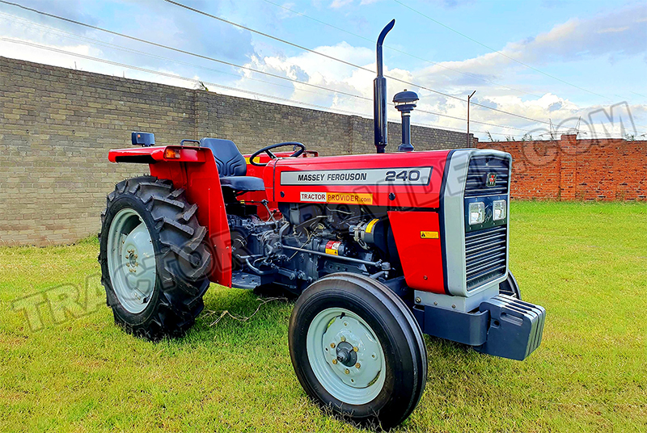
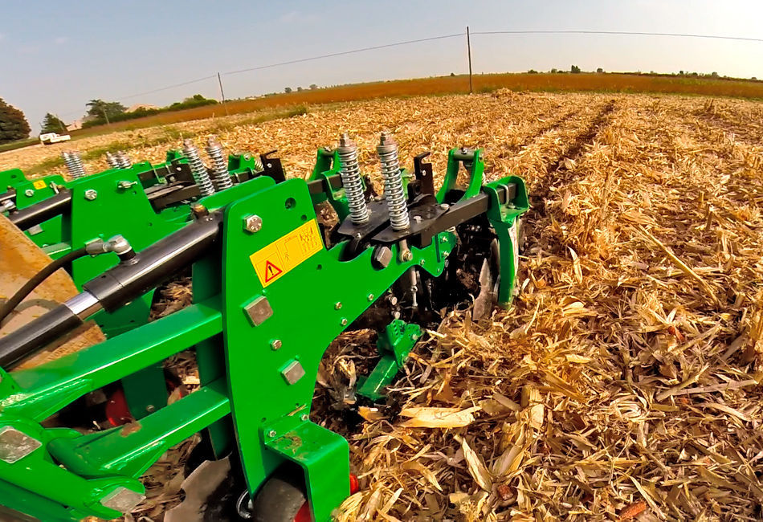
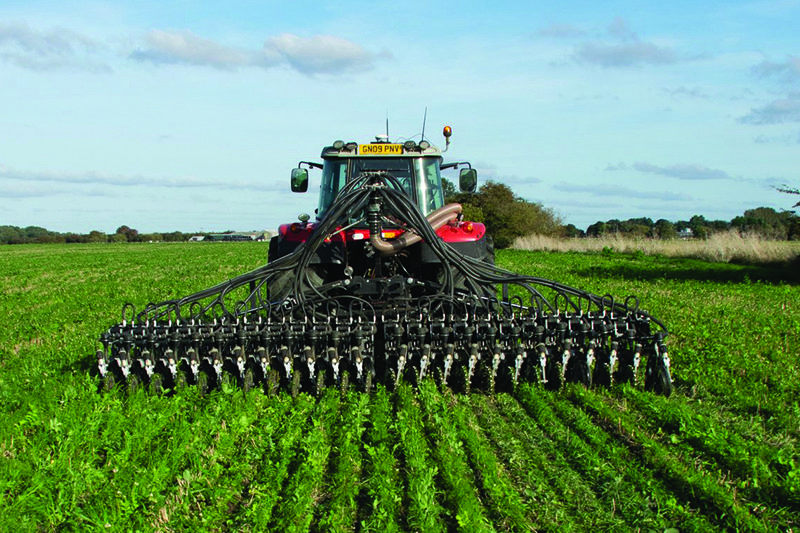
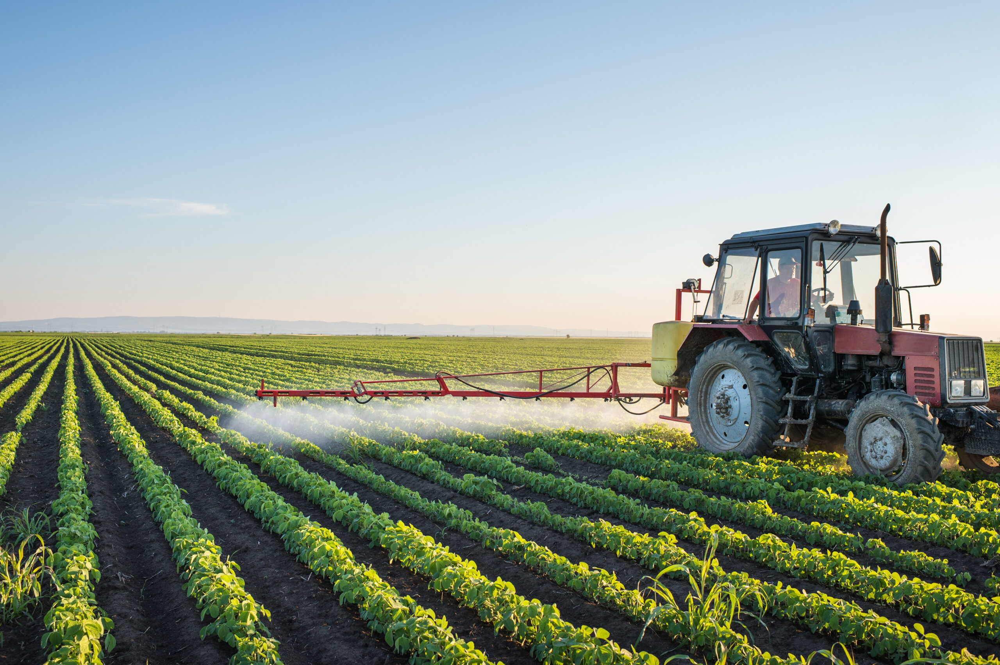
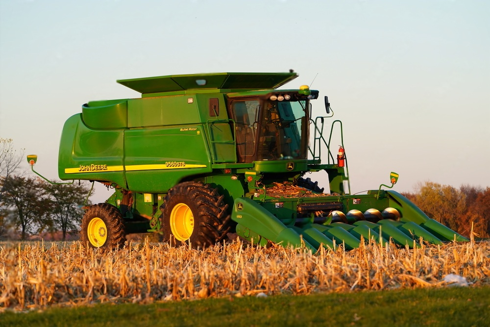
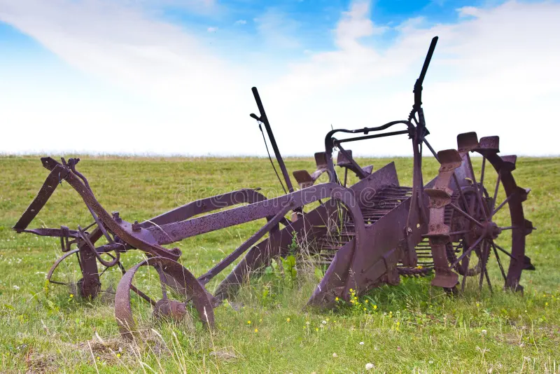
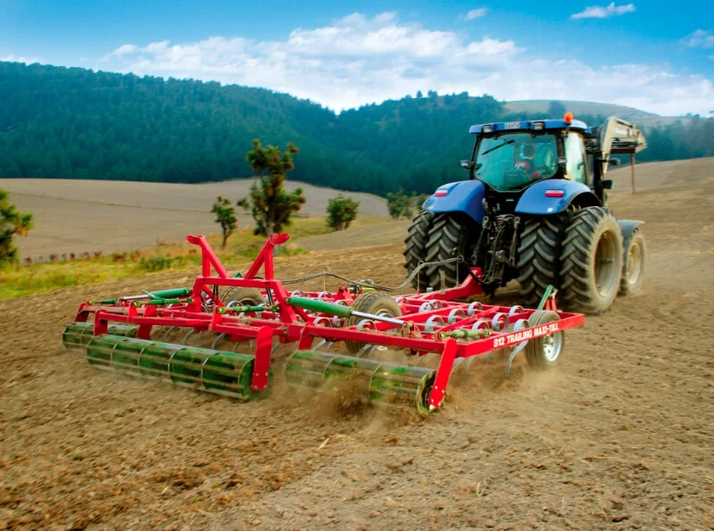

Tools Used For Farming
1. Tractor

Usage: Plowing, tilling, planting, towing implements.
How to Use: Start the engine, select the right gear, attach the needed implement, and operate slowly on the field.
Usage: Plowing, tilling, planting, towing implements.
How to Use: Start the engine, select the right gear, attach the needed implement, and operate slowly on the field.
2. Farming Rotor

Usage: Rotates and breaks soil for sowing.
How to Use: Attach to the tractor’s PTO, lower the rotor, and move evenly across the field.
Usage: Rotates and breaks soil for sowing.
How to Use: Attach to the tractor’s PTO, lower the rotor, and move evenly across the field.
3. Seed Drill

Usage: Sows seeds in rows with proper depth and spacing.
How to Use: Fill the hopper, calibrate for spacing, and pull using a tractor.
Usage: Sows seeds in rows with proper depth and spacing.
How to Use: Fill the hopper, calibrate for spacing, and pull using a tractor.
4. Sprayer

Usage: Applies pesticides and fertilizers.
How to Use: Mix chemicals, fill the tank, and spray evenly while wearing protective gear.
Usage: Applies pesticides and fertilizers.
How to Use: Mix chemicals, fill the tank, and spray evenly while wearing protective gear.
5. Harvester

Usage: Harvests crops like wheat, rice, maize.
How to Use: Drive the harvester through mature crops to cut and collect grains.
Usage: Harvests crops like wheat, rice, maize.
How to Use: Drive the harvester through mature crops to cut and collect grains.
6. Plough

Usage: Turns over the upper soil for planting.
How to Use: Attach to a tractor or use manually with animals, plough in straight rows.
Usage: Turns over the upper soil for planting.
How to Use: Attach to a tractor or use manually with animals, plough in straight rows.
7. Cultivator

Usage: Loosens soil and removes weeds.
How to Use: Connect to a tractor, lower blades to the soil, and cultivate before sowing.
Usage: Loosens soil and removes weeds.
How to Use: Connect to a tractor, lower blades to the soil, and cultivate before sowing.